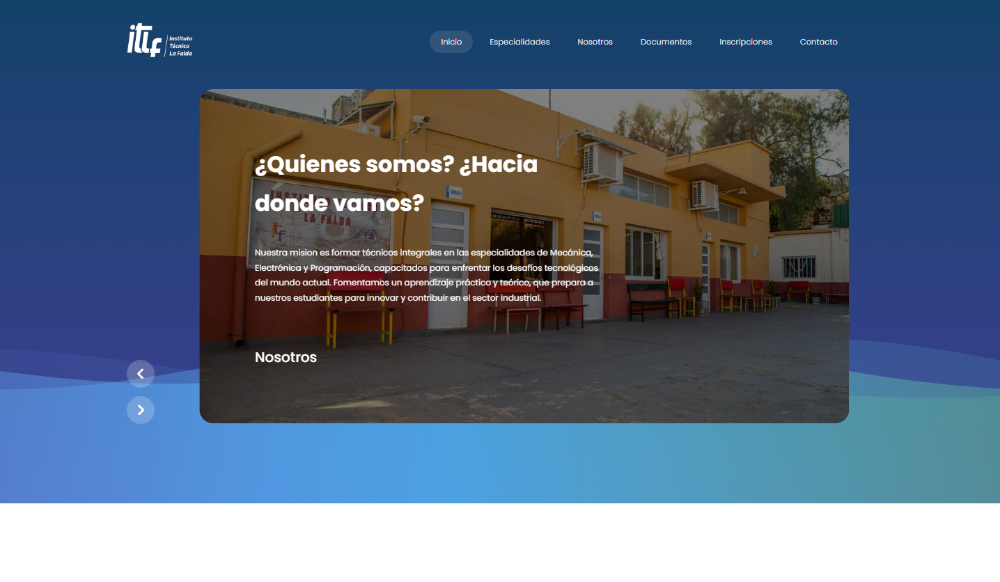

Especialidad
Programación
¡Descubrí Programación y dale vida a tus ideas! Si te encanta resolver problemas, la lógica detrás del software y crear aplicaciones desde cero, esta especialidad es para vos. Aprenderás a desarrollar soluciones tecnológicas que usamos diariamente, desde software hasta plataformas web. Tendrás la oportunidad de diseñar, desarrollar y optimizar sistemas que mejoran el funcionamiento del mundo. Si te apasiona la tecnología y los desafíos digitales, ¡Programación es tu camino!
¿Que aprenderan?
Los estudiantes de la especialidad de Técnico en Programación se forman como programadores full stack, adquiriendo habilidades para desarrollar software en diferentes lenguajes y plataformas. Aprenden a diseñar algoritmos, estructurar bases de datos, gestionar proyectos de desarrollo y aplicar técnicas de programación orientada a objetos. Además, trabajan con herramientas como JavaScript, PHP, HTML, CSS y bases de datos, permitiéndoles desarrollar tanto el front-end como el back-end de aplicaciones. También aplican conocimientos científicos (matemática, lógica, análisis de datos) en la solución de problemas complejos, utilizan control de versiones y metodologías ágiles. Asimismo, desarrollan competencias en emprendimiento, ciberseguridad y ética profesional, con un enfoque en la sostenibilidad y el impacto social. Están preparados para trabajar en empresas de tecnología o continuar sus estudios en campos más avanzados.
¿Como son sus instalaciones?
En la especialidad de Programación, tendrás acceso a laboratorios equipados con computadoras y todo el software necesario para desarrollar tus propios proyectos. Contamos con entornos de desarrollo integrados (IDEs), bases de datos y servidores para que puedas poner en práctica tus conocimientos.
Proyectos
En la especialidad de Programación, ¡trabajamos en proyectos que están transformando la forma en que vivimos y trabajamos! Con un enfoque en la innovación tecnológica y la eficiencia, desarrollamos soluciones digitales para problemas del mundo real. Algunos de nuestros proyectos incluyen la creación de una aplicación para gestionar residuos urbanos, una plataforma web para pequeñas empresas, un chatbot que responde preguntas frecuentes y esta misma web, fue desarrollada por programacion. Si te apasiona la idea de programar soluciones que cuiden el planeta mientras mejoras tus habilidades tecnológicas, ¡Programación es el lugar para vos!
Pagina Web Escolar
SowftWare Control de stock